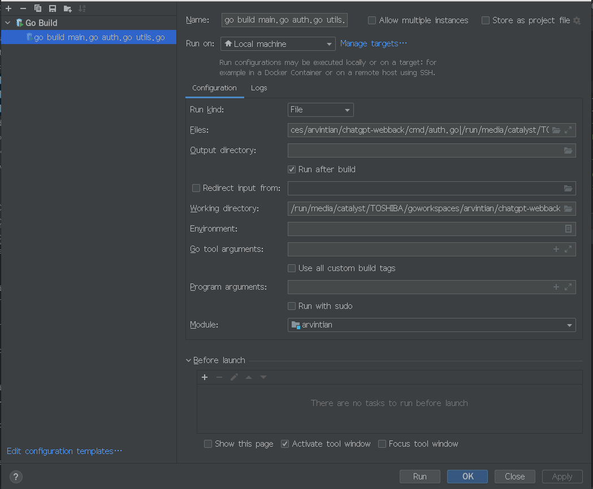

本科教学-数据库技术及应用(CENTOS环
境)
上机过程如有问题请看 oracle出
错集锦
Oracle上机练习十一： 关系数据库Oracle 19c基础及基本操作
一 上机内容:
1. Oracle 数据库简介: >
19.3.000
2. 练习ORACLE DB基本操作: DDL, DCL,
DML
3. 图形界面管理Oracle: SQL
Developer, MyEclipse和Eclipse管理Oracle数据库
4.
在MyEclipse中用JAVA语言进行简单的数据库访问以及基于tomcat的web前后端数据库技术(tomcat:
localhost:9875)
5.
在VSCode中用GO语言访问Oracle数据库(MyEclipse的goeclipse似乎不好用)
6. 拓展: c/c++访问oracle12(三种方式)
二 上机目的:
1. 了解关系数据库基本结构并加深对关系数据库的理解.
2. 练习关系查询语言sql.
3.
学会命令行和图形界面创建表，主键，外键，索引，视图等。
4.初步掌握利用高级语言与数据库进行交互.
高级拓展部分：
三 利用MyEclipse进行调试java语言及数据库访问.
四 利用Eclipse进行调试CPP语言及数据库访问.
五 利用VSCode进行调试GOLANG语言及数据库访问.
GOLANG项目基本问题的通用解决方案
cannot find package “xxx“ in any of的通用解决方案
提示找不到的是工程内部自定义的包名
也就是说，项目非go mod模式时，项目需要放在$GOPATH目录下编译；
如果使用了module模式，则没有这个要求，但GO111MODULE开关必须打开。
这是通用规则。那如何确认当前项目是否是mod模式？ ?
1，查看该项目目录是否有go.mod和go.sum 文件，如果有则该项目使用的是mod模式，此时需要将GO111MODULE开关打开；
set GO111MODULE=on
2，如果项目中没有go.mod和go.sum 文件，则需要将GO111MODULE开关关闭；
即模式要适配后再编译。
如何查看当前环境是否开启了GO111MODULE：
go env
查看GO111MODULE，结果为on则开启，off为关闭，auto为自动。
情况1
如果是mod项目， 模式关闭时分别去$GOROOT，$GOPATH目录下找包，如果以前没下载过 包到$GOPATH。
因此在GO111MODULE关闭的情况下编译会报这个错，此时需要将GO111MODULE打开：
set GO111MODULE=on? ?
或
go env -w GO111MODULE=on
再次编译即可。
情况2
GO111MODULE开关匹配的情况下，提示找不到啥，就拉它的代码($GOPATH模式下一般需要go
get，mod模式下编译时自动拉取/查询)。
可以先配置go代理：
export GOPROXY=https://goproxy.cn,direct
或
go env -w GOPROXY=https://goproxy.cn,direct
然后重试，80%此时已成功。
如果依旧不行，继续走下面的：
执行 go get -u 库地址??
或手动进行：
cd? $GOPATH/src/xxx? ?
执行 git clone 该库git地址?
就能解决这个问题
多数是网络问题，也可换环境编译。
3 . 多目录多文件golang项目的文件调用:
golang中package is not in GOROOT报错的真正解决办法
需要修改GO111MODULE=on， 或者说需要: 改目录的命名
H:\goworkspaces\arvintian (project dir)
>cd H:\goworkspaces\arvintian\chatgpt-webback
>> go mod init arvintian/chatgpt-webback
注意：这里的arvintian 和文件夹project 的名字arvintian
必须要一致。
然后在\chatgpt-webback根目录里创建文件main.go作为主程序入口文件，里面的包名必须是main。
然后在aaa根目录创建子目录这里我命名为cmd，里面创建一个文件叫eee.go，包名可以叫ddd。
为了不报错，这里有几个重点
第一，根目录文件夹名称xxx和go mod init xxx 必须要一致。
第二，主文件中import的是子包的目录路径，不能写子包的文件名或者包名。
第三，调用子包的方法的时候， 前缀必须是子包的包名（package名），和路径或者文件名无关。
4. go报错# command-line-arguments undefined: *解决方案
使用goland开发。同一个包下两个或多个go文件，包名为main，点击其中一个文件的main()方法运行时报错
# command-line-arguments
./main.go:92:30: undefined: BasicAuth
./main.go:94:24: undefined: BasicAuth
./main.go:113:26: undefined: OpsAuth
问题原因
main 包中的不同的文件的代码不能相互调用，其他包可以。所以其实Link.go没有被一起编译执行。
问题解决
如果是用命令行环境的，采用命令: go run *.go
如果也是用goland开发的，鼠标同时选中main包下所有的文件，右键点击运行即可.(确实！)
$ go run .
//这样也可以，表示执行所有文件！！
其实可以在GOLANG中配置一下：
